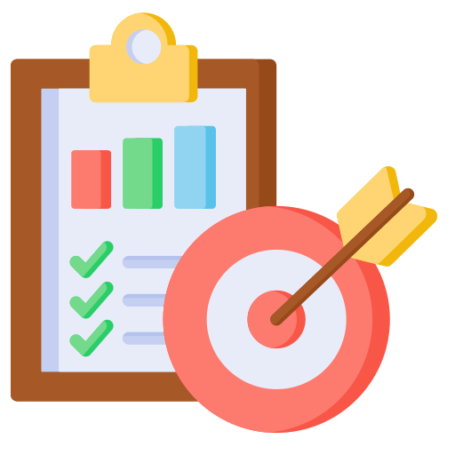

Docencia Digital
Fundamentos de Google Colab para comenzar hoy
Francisco Alfaro
2026-03-02
Objetivos

- Entender que es Google Colab y por que se usa en docencia.
- Conocer su origen y ventajas frente a instalar todo local.
- Crear y configurar un notebook desde cero.
- Ejecutar celdas de texto y codigo Python.
- Guardar, compartir y exportar resultados.
Google Colab en una frase
Google Colab es un entorno en la nube para escribir y ejecutar notebooks de Python desde el navegador.
Piensalo como Jupyter Notebook + Google Drive + colaboracion en tiempo real.
De donde nace Colab
- Colab nace como iniciativa de Google Research.
- Su meta: facilitar aprendizaje y experimentacion en Python/IA sin configuraciones complejas.
- Se integra de forma nativa con Google Drive.
Ideal para clases, laboratorios y prototipos rapidos.
Para que sirve Google Colab
Ejecutar codigo
Python en la nube, sin instalar nada.
Colaborar
Varias personas editan el mismo notebook.
Documentar
Combina texto, codigo, graficos y conclusiones.
Requisitos minimos
- Cuenta Google activa.
- Navegador web actualizado.
- Conexion a internet.
- (Opcional) Cuenta GitHub para guardar notebooks en repositorios.
Crear tu primer notebook
- Entrar a colab.research.google.com.
- Clic en New Notebook.
- Cambiar nombre del archivo (ej:
intro_colab.ipynb). - Escribir una celda de texto y una celda de codigo.
- Ejecutar con el boton Run o
Shift + Enter.
Estructura de un notebook
| Tipo de celda | Uso |
|---|---|
| Text (Markdown) | Explicar ideas, instrucciones, conclusiones. |
| Code | Ejecutar Python, cargar datos, generar graficos. |
| Output | Resultado de la ejecucion (tabla, texto, figura, error). |
Primer ejemplo en clase
Librerias y entorno
- Muchas librerias ya vienen preinstaladas (NumPy, pandas, matplotlib, scikit-learn).
- Si falta algo, puedes instalar en una celda:
Importante: el entorno puede reiniciarse; guarda avances en Drive o GitHub.
Subir archivos y usar Drive
- Subir archivos manualmente desde el panel lateral.
- Montar Google Drive para leer/escribir archivos persistentes.
Compartir y colaborar
- Clic en Share.
- Definir permisos: Viewer, Commenter o Editor.
- Compartir enlace con estudiantes o equipo.
Funciona igual que Docs/Sheets para trabajo colaborativo.
Exportar y versionar
- Descargar notebook como
.ipynbo.py. - Guardar copia en GitHub.
- Buen flujo sugerido:
- Trabajar en Colab.
- Guardar en Drive.
- Versionar en GitHub al cerrar la sesion.
Buenas practicas en docencia
- Separar notebook en bloques pequenos (objetivo, codigo, resultado, conclusion).
- Usar titulos y texto Markdown claro.
- Reiniciar y ejecutar todo antes de publicar.
- Evitar celdas demasiado largas.
- Dejar instrucciones para estudiantes en cada actividad.
Actividad guiada (10-15 min)
- Crear notebook
mi_primer_colab.ipynb. - Agregar portada en Markdown con nombre y fecha.
- Ejecutar 2 celdas de Python.
- Crear un grafico simple.
- Compartir enlace con el docente o equipo.
Recursos recomendados
Cierre
Colab reduce la barrera tecnica para aprender programacion
Permite enfocarse en ideas, analisis y colaboracion
Gracias por Participar
Sitio: sethnut.com/talks